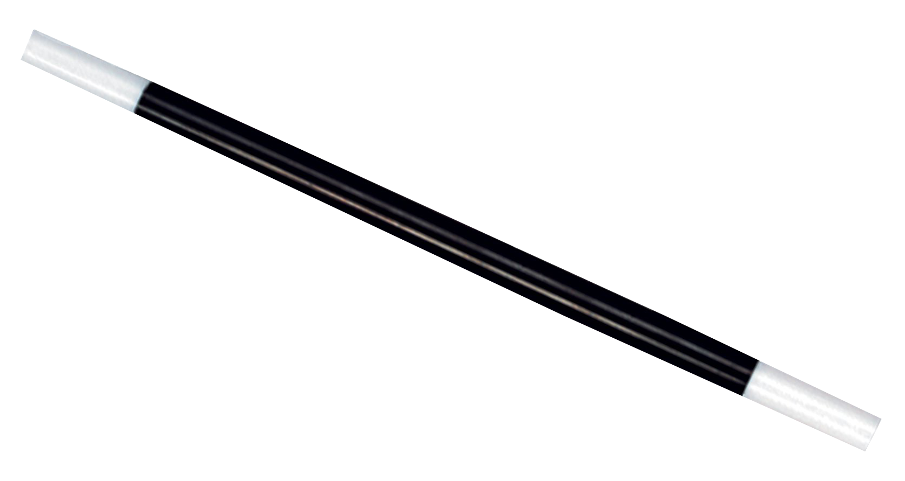

Ibracadabra
This is a Zlatan Ibrahimovic fansite, here you can network with fellow Zlatan fans aswell as soccer players, from all around the world!

Info About Zlatan:
Full name: Zlatan Ibrahimović
Date of birth: 3 October 1981 (age 35)
Place of birth: Malmö, Sweden
Height: 1.95 m (6 ft 5 in)
Playing position: Striker

Current Club & Statistics:
Zlatan's current club is Manchester
Utd. He has scored a total of 15 goals
so far in the Premier League and is currently
number 4 in the PL Top Scorer table. In
714 games, Zlatan has scored a total of 416
goals (in his career)

About Zlatrix:
Zlatrix is a forum for soccer
players, aswell as fans for the
well-known, Zlatan Ibrahimovic.
Here you can communicate with fellow
soccer
players to make friends or discuss
the topic!